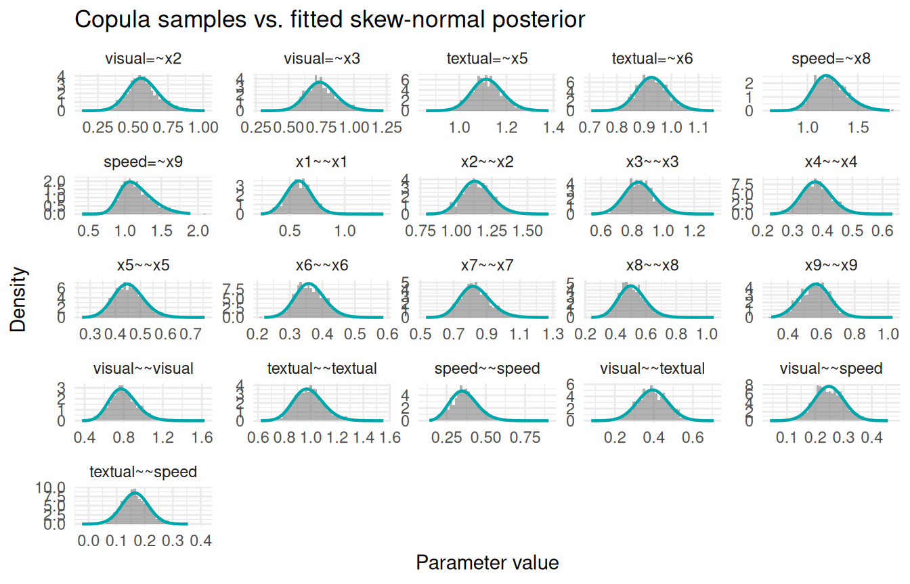
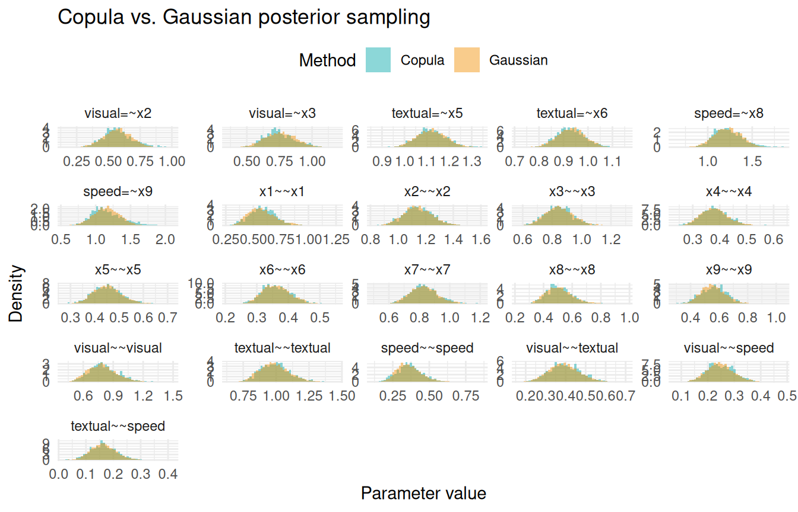

dat <- lavaan::HolzingerSwineford1939
mod <- "
visual =~ x1 + x2 + x3
textual =~ x4 + x5 + x6
speed =~ x7 + x8 + x9
"
fit <- acfa(mod, dat, verbose = FALSE)Purpose
After fitting a Bayesian SEM with INLAvaan, we often want to draw samples from the model itself—either using posterior or prior parameter values. The sampling() function does exactly this: it propagates parameter draws through the full generative chain
producing samples that are not tied to any individual observation. This is distinct from predict(), which returns individual-specific factor scores .
Typical use cases include posterior predictive checks (PPCs) and prior predictive checks; the predictive checks article walks through that workflow.
sampling() versus simulate()
INLAvaan offers two ways to draw data from the generative model, and the difference is what varies between draws:
| One draw is | Returns | Use for | |
|---|---|---|---|
sampling() |
one → one observation | a matrix (or list) | distributions of quantities: parameters, implied moments |
simulate() |
one → a whole dataset of rows | a list of data frames | replicate datasets: PPC overlays, test statistics, SBC |
sampling() refreshes at every draw, pooling parameter uncertainty and sampling variability into a single marginal predictive distribution. simulate() holds each fixed for a whole dataset, so variation across replicates reflects parameter uncertainty while variation within a replicate reflects sampling variability—which is what makes replicates exchangeable with the observed data, and hence the right tool for predictive checks and simulation-based calibration. Both functions accept prior = TRUE. The rest of this article covers sampling().
The generative model
Let () denote one parameter draw. From this draw the SEM matrices , , , , , and are constructed. The generative chain is:
1. Latent variables.
2. Observed variables.
When prior = FALSE (default), comes from the posterior; when prior = TRUE, each parameter is drawn independently from its prior.
Quick start
Parameter samples
The default type "lavaan" returns an matrix of lavaan-side (constrained) parameter draws:
theta_post <- sampling(fit, type = "lavaan", nsamp = 2000)
dim(theta_post)
#> [1] 2000 21
head(theta_post[, 1:4])
#> visual=~x2 visual=~x3 textual=~x5 textual=~x6
#> [1,] 0.6217858 0.9061140 1.1243541 0.9963907
#> [2,] 0.5512358 0.8050023 1.2136311 0.9163359
#> [3,] 0.5589911 0.7004874 0.9801615 0.9248339
#> [4,] 0.5567474 0.7638705 1.1415682 1.0361746
#> [5,] 0.5948947 1.0233424 1.0731154 0.8664639
#> [6,] 0.3630961 0.7067411 1.0889999 0.8696213Latent and observed samples
Everything at once
Comparing samples to the fitted marginals
INLAvaan approximates each marginal posterior with a skew-normal density. We can overlay the sampling() histogram (drawn via the copula method) on top of the fitted density curve stored in pdf_data to verify that they agree.
# 1. Draw copula samples
samp_cop <- sampling(fit, type = "lavaan", nsamp = 1000, samp_copula = TRUE)
# 2. Retrieve the fitted skew-normal densities
int <- fit@external$inlavaan_internal
pdf_data <- int$pdf_data
# 3. Build a long data frame for ggplot
par_names <- colnames(samp_cop)
hist_df <- data.frame(
param = rep(par_names, each = nrow(samp_cop)),
value = as.vector(samp_cop)
)
hist_df$param <- factor(hist_df$param, levels = par_names)
curve_df <- do.call(rbind, Map(function(nm, df) {
data.frame(param = nm, x = df$x, y = df$y)
}, par_names, pdf_data[par_names]))
curve_df$param <- factor(curve_df$param, levels = par_names)
# 4. Plot
ggplot(hist_df, aes(x = value)) +
geom_histogram(aes(y = after_stat(density)), bins = 50,
fill = "grey40", alpha = 0.5) +
geom_line(data = curve_df, aes(x = x, y = y),
colour = "#00A6AA", linewidth = 0.8) +
facet_wrap(~param, scales = "free") +
labs(x = "Parameter value", y = "Density",
title = "Copula samples vs. fitted skew-normal posterior") +
theme_minimal(base_size = 11)
Copula vs. Gaussian sampling
By default, sampling() uses the copula method, which respects the skew-normal marginals. Setting samp_copula = FALSE uses the multivariate Gaussian (Laplace) approximation instead. The difference is most visible for parameters with asymmetric posteriors, such as variance components.
samp_gauss <- sampling(fit, type = "lavaan", nsamp = 5000, samp_copula = FALSE)
cop_df <- data.frame(
param = rep(par_names, each = nrow(samp_cop)),
value = as.vector(samp_cop),
method = "Copula"
)
gauss_df <- data.frame(
param = rep(par_names, each = nrow(samp_gauss)),
value = as.vector(samp_gauss),
method = "Gaussian"
)
both_df <- rbind(cop_df, gauss_df)
both_df$param <- factor(both_df$param, levels = par_names)
both_df$method <- factor(both_df$method, levels = c("Copula", "Gaussian"))
ggplot(both_df, aes(x = value, fill = method)) +
geom_histogram(aes(y = after_stat(density)), bins = 50,
alpha = 0.45, position = "identity") +
facet_wrap(~param, scales = "free") +
scale_fill_manual(values = c(Copula = "#00A6AA", Gaussian = "#F18F00")) +
labs(x = "Parameter value", y = "Density", fill = "Method",
title = "Copula vs. Gaussian posterior sampling") +
theme_minimal(base_size = 11) +
theme(legend.position = "top")
For symmetric posteriors (e.g., factor loadings), the two methods are nearly identical. For positively-skewed posteriors (e.g., residual variances), the copula method captures the asymmetry while the Gaussian approximation is symmetric by construction.
Prior sampling
Both sampling() and simulate() accept prior = TRUE: each free parameter is drawn independently from its prior (the data play no role) and propagated through the generative chain. Draws that imply a non-positive-definite covariance matrix are rejected and redrawn, so the exact prior is preserved. What these draws are useful for—and how to read them when the model has no mean structure—is the subject of the predictive checks article.